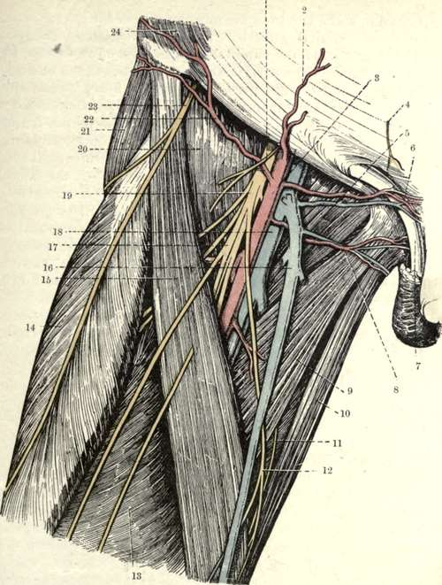

Scarpa's Triangle. Surface Anatomy
Description
This section is from the book "Surgical Anatomy", by John A. C. MacEwen. Also available from Amazon: Surgical Anatomy.
Scarpa's Triangle. Surface Anatomy
Scarpa's triangle is limited above by Poupart's ligament, extending from the anterior superior spine to the spine of the pubis in a slight curve, with the convexity downwards. Owing to the attachment to it of the fascia lata, it is rendered less tense when the thigh is flexed, adducted, and rotated inwards.
Holden's line, extending outwards from the angle between the scrotum and the thigh to midway between the anterior superior spine and tip of the trochanter, is said to be visible when the thigh is flexed, and to act as a guide to the capsule of the hip-joint, across the front of which it runs. The triangle is bounded externally by the sartorius, and internally by the adductor longus. The sartorius may be rendered prominent by raising the limb across the opposite knee. The tendon of the adductor longus arises just below the spine of the pubis, and where this landmark cannot very easily be made out in a stout person, the adductor longus tendon, which may be rendered tense by asking the patient to adduct the limb against some resistance, acts as a guide. The pulsations of the femoral artery can generally be seen near the base of the triangle, and occasionally the vein bulges slightly forwards when the patient stands and coughs, thus resembling femoral hernia. Other conditions resembling femoral hernia are femoral aneurism, tumours (particularly lipomas, which are sometimes partially reducible through apertures in the fascia lata), psoas abscess, and enlargement of the glands in the groin. The suppurative glandular enlargement, which occurs in soft sore, etc., is spoken of as a bubo. The lymphatic glands can frequently be felt.
The position of the femoral ring is indicated by taking a point 1 inch from the pubic spine on a line drawn from the spine to the tip of the great trochanter, or by taking a point ½ inch inside the femoral artery, and close to Poupart's ligament. The position of the saphenous opening is sometimes marked by a slight depression on the surface, or it may be indicated by taking a point 1½ inches below, and external to, the pubic spine. In thin persons the long saphenous vein can frequently be made out passing to the opening. A supernumerary mamma is occasionally found in the groin, and the testicle, instead of descending into the scrotum, may descend through the crural canal into Scarpa's triangle, or even turn up like a femoral hernia over Poupart's ligament.
The skin over the triangle is thin, loosely attached, and distensible, permitting large herniae, or tumours, to occupy the space. Incisions made parallel to Poupart's ligament come together easily, whereas vertical ones tend to gape. Burns frequently produce contraction deformities, resulting in flexion of the hip. The superficial fascia contains a considerable amount of fat, and near Poupart's ligament is divisible into two layers. Lipomas frequently occur in this region, and may travel, under gravity, some distance down the thigh. Superficial abscesses arise from infection of the superficial lymphatic glands from some abrasion of the limb, genitals, anus, or buttock, and generally do not travel under this fascia, but readily point through it close under Poupart's ligament. Branches of the femoral artery in this region are the superficial circumflex iliac, epigastric and external pudic, the accompanying veins discharging into the long saphenous.
The long saphenous vein ascends from the dorsum of the foot, in front of the inner malleolus, along the inside of the leg to the posterior aspect of the internal condyle of the femur, where it is in relation to the long saphenous nerve of the anterior crural. Thence it runs upwards and outwards to the saphenous opening, pierces the cribriform fascia and anterior wall of the femoral sheath, and joins the femoral vein. In its course it receives many branches, of which the chief are the outer and inner superficial femoral, which join it about the apex of Scarpa's triangle.
The lymphatic glands are arranged in superficial and deep sets. The former, about twelve in number, are arranged in two groups-a horizontal close to Poupart's ligament, and a vertical along the long saphenous vein. The vertical group receives the superficial lymphatics of the lower limb, of the perineum, and a few from the inner surface of the buttock and from the external genitals. The horizontal group receives the lymphatics of the external genitals, the outer surface of the buttock (to the outer glands), inner surface of the buttock (to inner glands), and superficial vessels of lower half of the abdomen (to middle glands). The deep glands, some four in number, are situated along the femoral vein near the crural canal, and receive the deep lymphatics of the lower limb, and also most of the efferent vessels from the superficial set. The efferent vessels from the deep set pass through the crural canal to the iliac glands, three of which lie immediately above Poupart's ligament. One of these glands is situated in the crural canal, lying on the septum crurale. When inflamed, it may cause much pain, and simulate strangulated femoral hernia. Enlargement of the superficial set may stretch branches of the anterior crural nerve, and give rise to much pain and muscular spasm.
Fig. 36.-The Front of the Thigh (Scarpa's Triangle) (From Buchanan's Anatomy.")
1. | Crural branch of genito-crural nerve. | 13. | Vastus internus. |
2. | Superficial epigastric artery. | 14. | Rectus femoris. |
3. | Common femoral artery. | 15. | Sartorius. |
4. | Hypogastric branch of ilio-hypogastric nerve. | 16. | Left saphenous vein. |
17. | Middle cutaneous nerve. | ||
5. | Pectineus. | 18. | Femoral vein. |
6. | Superior external pudic artery. | 19. | Anterior crural nerve. |
7. | Spermatic cord. | 20. | Iliacus. |
8. | Inferior external pudic artery. | 21. | Tensor fasciai femoris. |
9. | Adductor longus. | 22. | Superficial circumflex iliac artery. |
1O. | Gracilis. | 23. | External cutaneous nerve. |
11. | Cutaneous branch of obturator nerve. | 24. | Obliquus externus abdominis. |
12. | Internal cutaneous nerve. |
The fascia lata forms a tubular investment for the muscles of the thigh, being attached above to the iliac crest, Poupart's ligament, body, and ramus of the pubis, ramus of the ischium, great sacro-sciatic ligament, side of sacrum and coccyx, and posterior superior spine. The only opening in it is the saphenous opening, formied by splitting and crossing of its upper extremity, and covered by the thin cribriform fascia. Of the two portions formed by this split, the outer iliac portion covers the sartorius and ilio-psoas, and is inserted into the whole length of Poupart, while the inner pubic portion covers the adductor longus and pectineus, and is inserted deeply behind the femoral vessels to the ilio-pectineal line, fusing with the fascia iliaca as it does so. It is not of uniform strength, the thickest portion being the ilio-tibial band on the outer side, and it sends in septa between the muscles, of which the most important are the internal and external intermuscular septa, the former extending from the lesser trochanter to the adductor tubercle, and the latter lying beneath the great trochanter, and extending to the outer aspect of the knee-joint. This fascia is supposed to exert an influence in causing femoral herniae and psoas abscesses to turn upwards toward the groin, while, on the other hand, it may prevent a psoas abscess from pointing about the small trochanter, and cause it to travel down even to the knee or leg.
Continue to: